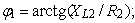
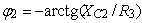

Задание 2. По данным табл. 8.2 построить векторные диаграммы напряжений и токов схем замещения контуров в режиме резонанса. Убедиться, что угол φ между вектором напряжения U =E и вектором тока I0 в последовательном колебательном контуре и угол φ между вектором U и вектором тока I в параллельном колебательном контуре близки к нулю.
Таблица 8.2
| Положение ключа S |
Ток, напряжение, угол φ |
Рассчитано | Измерено | ||||||||||||
| Частота, Гц | Частота f, Гц | ||||||||||||||
| fPH, Гц | fPТ, Гц | 30 | 40 | 50 | 60 | 70 | 80 | 90 | 100 | 110 | 120 | fр | |||
| Нижнее | I0, A | ||||||||||||||
| UR, B | |||||||||||||||
| UL, B | |||||||||||||||
| UC, B | |||||||||||||||
| Верхнее | I1, A | ||||||||||||||
| I2, A | |||||||||||||||
| I, A | |||||||||||||||
| φ1, град | Примечание.  . | ||||||||||||||
| φ2, град | |||||||||||||||